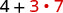
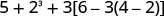
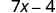
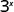

ચલ અને બીજગણિતીય સંકેતોનો ઉપયોગ કરો
| ગ્રેગની ઉંમર | એલેક્સની ઉંમર |
|---|---|
ચલ
અચળ
| ક્રિયા | સંકેતલિપિ | વાંચો: | પરિણામ છે… |
|---|---|---|---|
| સરવાળો | a વત્તા b | a અને b નો સરવાળો | |
| બાદબાકી | a ઓછા b | a અને b વચ્ચેનો તફાવત | |
| ગુણાકાર | a ગુણ્યા b | a અને b નો ગુણાકાર | |
| ભાગાકાર | a ભાગ્યા b | a અને b નું ભાગફળ; a ને ભાજ્ય અને b ને ભાજક કહે છે. |
- તફાવત 9 અને 2નો એટલે 9માંથી 2 બાદ કરવા; બીજા શબ્દોમાં 9 ઓછા 2. સંકેતમાં લખીએ છીએ
- ગુણાકાર 4 અને 8નો એટલે 4 અને 8નો ગુણાકાર કરવા; બીજા શબ્દોમાં 4 ગુણ્યા 8. સંકેતમાં લખીએ છીએ
સમાનતાનો સંકેત
અસમાનતા

a અને b બિંદુઓ દર્શાવતી સંખ્યારેખા.

b અને a બિંદુઓ દર્શાવતી અંકિત રેખા.
| અસમાનતાના સંકેતો | શબ્દો |
|---|---|
| a એ b ની બરાબર નથી | |
| a < b | a એ b કરતાં નાનું છે |
| a એ b કરતાં નાનું અથવા તેની બરાબર છે | |
| a > b | a એ b કરતાં મોટું છે |
| a એ b કરતાં મોટું અથવા તેની બરાબર છે |
ઉકેલ
17 એ 26 કરતાં નાનું અથવા તેની બરાબર છે
ⓑ
8 એ 17 ઓછા 3ની બરાબર નથી
ⓒ
12 એ 27 ભાગ્યા 3 કરતાં મોટું છે
ⓓ
y વત્તા 7 એ 19 કરતાં નાનું છે
જૂથ દર્શાવતા સંકેતો
પદાવલી
| પદાવલી | શબ્દો | ભાષાનો શબ્દસમૂહ |
|---|---|---|
| 3 વત્તા 5 | ત્રણ અને પાંચનો સરવાળો | |
| n ઓછા એક | n અને એક વચ્ચેનો તફાવત | |
| 6 ગુણ્યા 7 | છ અને સાતનો ગુણાકાર | |
| x ભાગ્યા y | x અને y નું ભાગફળ |
સમીકરણ
| સમીકરણ | ભાષાનું વાક્ય |
|---|---|
| ત્રણ અને પાંચનો સરવાળો આઠની બરાબર છે. | |
| n ઓછા એક બરાબર ચૌદ. | |
| છ અને સાતનો ગુણાકાર બેતાલીસની બરાબર છે. | |
| x ત્રેપનની બરાબર છે. | |
| y વત્તા નવ બરાબર બે y ઓછા ત્રણ. |
ઉકેલ
| ⓐ | આ એક સમીકરણછે—બે પદાવલીઓને સમાનતાની નિશાનીથી જોડેલી છે. |
| ⓑ | આ એક પદાવલીછે—સમાનતાની નિશાની નથી. |
| ⓒ | આ એક પદાવલીછે—સમાનતાની નિશાની નથી. |
| ⓓ | આ એક સમીકરણછે—બે પદાવલીઓને સમાનતાની નિશાનીથી જોડેલી છે. |
અર્થાત્ ગુણાકારમાં 2 ત્રણ વખત આવે: .
સંખ્યા બેની ઉપર જમણે ત્રણ લખેલું છે. બે તરફ તીર છે અને તેની પાસે “આધાર” લખ્યું છે; ઉપરના ત્રણ તરફ બીજું તીર છે અને તેની પાસે “ઘાતાંક” લખ્યું છે. તેનો અર્થ બેનો પોતાની સાથે ત્રણ વખત ગુણાકાર, એટલે 2 ગુણ્યા 2 ગુણ્યા 2 થાય છે.
ઘાત સ્વરૂપ
અવયવો
aની ઉપર જમણે n લખેલું છે. a તરફ તીર “આધાર” અને ઉપરના n તરફ તીર “ઘાતાંક” બતાવે છે. નીચે aની n ઘાત બરાબર a ગુણ્યા a ગુણ્યા લોપચિહ્ન ગુણ્યા a લખ્યું છે, એટલે aનો અનિશ્ચિત n વખત ગુણાકાર થાય છે. ગુણાકારમાં આવેલા aઓ નીચે કૌંસ છે અને “n અવયવો” લખ્યું છે.
- “a નો વર્ગ”
- “a નો ઘન”
| પદાવલી | શબ્દોમાં |
|---|---|
| 7ની બીજી ઘાત અથવા 7નો વર્ગ | |
| 5ની ત્રીજી ઘાત અથવા 5નો ઘન | |
| 9ની ચોથી ઘાત | |
| ની પાંચમી ઘાત |
ઉકેલ
| પદાવલીને વિસ્તૃત ગુણાકાર સ્વરૂપે લખો. | |
| ડાબેથી જમણે ગુણાકાર કરો. | |
| ગુણાકાર કરો. | |
| ગુણાકાર કરો. | 81 |
ક્રિયાઓના ક્રમથી પદાવલીઓને સાદું રૂપ આપો
પદાવલીને સાદું રૂપ આપો
ક્રિયાઓના ક્રમ મુજબ કરો.
- ગોળ કૌંસ અને જૂથ દર્શાવતા બીજા સંકેતો
- ગોળ કૌંસ કે જૂથ દર્શાવતા બીજા સંકેતોની અંદરની બધી પદાવલીઓને સાદું રૂપ આપો; સૌથી અંદરના કૌંસથી શરૂ કરો.
- ઘાતાંક
- ઘાતાંકવાળી બધી પદાવલીઓને સાદું રૂપ આપો.
- ગુણાકાર અને ભાગાકાર
- બધા ગુણાકાર અને ભાગાકાર ડાબેથી જમણે ક્રમમાં કરો. બંને ક્રિયાની પ્રાથમિકતા સરખી છે.
- સરવાળો અને બાદબાકી
- બધા સરવાળા અને બાદબાકી ડાબેથી જમણે ક્રમમાં કરો. બંને ક્રિયાની પ્રાથમિકતા સરખી છે.
ઉકેલ
 સફેદ પૃષ્ઠભૂમિ પર કાળા રંગમાં 4 + 3·7 ગણિતીય પદાવલી છે. |
|
| શું કોઈ ગોળ કૌંસ છે? ના. | |
| શું કોઈ ઘાતાંક છે? ના. | |
| શું કોઈ ગુણાકાર કે ભાગાકાર છે? હા. | |
| પહેલાં ગુણાકાર કરો. |  સફેદ પૃષ્ઠભૂમિ પર 4 + 3·7 છે. 4 અને વત્તાની નિશાની કાળી છે; 3, ગુણાકાર-બિંદુ અને 7 લાલ છે. |
| સરવાળો કરો. |  સફેદ પૃષ્ઠભૂમિ પર કાળા રંગમાં 4 + 21 ગણિતીય પદાવલી છે. |
 સાદી સફેદ પૃષ્ઠભૂમિ પર ઘેરા રાખોડી રંગમાં 25 છે. |
 ગોળ કૌંસમાં 4 + 3નો સરવાળો છે અને તેનો 7 વડે ગુણાકાર દર્શાવેલો છે: (4 + 3) · 7. |
|
| શું કોઈ ગોળ કૌંસ છે? હા. |  (4 + 3) · 7 પદાવલીમાં 4, વત્તાની નિશાની અને 3 લાલ છે; બંને કૌંસ, ગુણાકાર-બિંદુ અને છેલ્લો 7 કાળા છે. |
| કૌંસની અંદર સાદું રૂપ આપો. | 7 બે વાર બતાવેલો છે; પહેલો લાલ 7 કૌંસમાં છે અને પછી કાળો 7 છે. |
| શું કોઈ ઘાતાંક છે? ના. | |
| શું કોઈ ગુણાકાર કે ભાગાકાર છે? હા. | |
| ગુણાકાર કરો. | સાદી સફેદ પૃષ્ઠભૂમિ પર ઘેરા રાખોડી કે કાળા રંગમાં 49 છે. |
ઉકેલ
| કૌંસ છે? હા, પહેલાં બાદબાકી કરો. |  18 ભાગ્યા 6 વત્તા 4 ગુણ્યા 3 દર્શાવતી પદાવલી: 18 ÷ 6 + 4(3). |
| ઘાતાંક છે? ના. | |
| ગુણાકાર કે ભાગાકાર છે? હા. |  સફેદ પૃષ્ઠભૂમિ પર 18 ÷ 6 + 4(3) પદાવલી છે. 18 ÷ 6 અને 4(3) લાલ છે, જ્યારે વચ્ચેની વત્તાની નિશાની કાળી છે. |
| પહેલાં ભાગાકાર કરો, કારણ કે ગુણાકાર અને ભાગાકાર ડાબેથી જમણે કરીએ છીએ. | 3 + 4(3) પદાવલીમાં 4(3) લાલ છે; સરવાળા પહેલાં આ ગુણાકાર કરવો તે દર્શાવે છે. |
| બીજો કોઈ ગુણાકાર કે ભાગાકાર છે? હા. | |
| ગુણાકાર કરો. | સફેદ પૃષ્ઠભૂમિ પર ઘેરા રંગમાં 3 + 12 પદાવલી છે; તે સરવાળો દર્શાવે છે. |
| બીજો કોઈ ગુણાકાર કે ભાગાકાર છે? ના. | |
| કોઈ સરવાળો કે બાદબાકી છે? હા. |  સફેદ પૃષ્ઠભૂમિ પર ઘેરા રાખોડી રંગમાં 15 છે. |
ઉકેલ
 ગોળ અને ચોરસ કૌંસમાં ગોઠવેલી સરવાળા, બાદબાકી, ઘાત અને ગુણાકારની પદાવલી: 5 + 2^3 + 3[6 − 3(4 − 2)]. |
|
| કોઈ ગોળ કૌંસ કે જૂથ દર્શાવતો બીજો સંકેત છે? હા. | |
| ચોરસ કૌંસની અંદરના ગોળ કૌંસ પર ધ્યાન આપો. | 5 + 2³ + 3[6 − 3(4 − 2)] પદાવલીમાં સૌથી અંદરનું (4 − 2) જૂથ, બંને કૌંસ સહિત, લાલ છે. બાકી બધું કાળું છે. |
| બાદબાકી કરો. | ![5 + 2^3 + 3[6 − 3(2)] પદાવલીમાં “3(2)” લાલ છે અને આગળના પગલાનું ધ્યાન ત્યાં દોરે છે.](media/CNX_ElemAlg_Figure_01_02_008c_img_new.jpg) 5 + 2^3 + 3[6 − 3(2)] પદાવલીમાં “3(2)” લાલ છે અને આગળના પગલાનું ધ્યાન ત્યાં દોરે છે. |
| ચોરસ કૌંસની અંદર આગળ ગુણાકાર કરો. | ![5 + 2³ + 3[6 − 6] પદાવલીમાં ચોરસ કૌંસની અંદર પહેલો 6 કાળો છે, જ્યારે પછીનું −6 લાલ છે.](media/CNX_ElemAlg_Figure_01_02_008d_img_new.jpg) 5 + 2³ + 3[6 − 6] પદાવલીમાં ચોરસ કૌંસની અંદર પહેલો 6 કાળો છે, જ્યારે પછીનું −6 લાલ છે. |
| ચોરસ કૌંસની અંદર આગળ બાદબાકી કરો. | ![5 + 2^3 + 3[0] પદાવલીમાં ચોરસ કૌંસનો 0 લાલ છે.](media/CNX_ElemAlg_Figure_01_02_008e_img_new.jpg) 5 + 2^3 + 3[0] પદાવલીમાં ચોરસ કૌંસનો 0 લાલ છે. |
| ચોરસ કૌંસની અંદરની પદાવલીને હવે વધુ સાદું રૂપ આપવાની જરૂર નથી. | |
| કોઈ ઘાતાંક છે? હા. |  5 + 2³ + 3(0) પદાવલીમાં 2³ લાલ છે; બાકીનાં ચિહ્નો અને સંખ્યાઓ કાળાં છે. |
| ઘાતાંકવાળી પદાવલીને સાદું રૂપ આપો. | ![સફેદ પૃષ્ઠભૂમિ પર 5 + 8 + 3[0] છે; 3[0] લાલ છે અને આગળનું ધ્યાન ત્યાં દોરે છે.](media/CNX_ElemAlg_Figure_01_02_008g_img_new.jpg) સફેદ પૃષ્ઠભૂમિ પર 5 + 8 + 3[0] છે; 3[0] લાલ છે અને આગળનું ધ્યાન ત્યાં દોરે છે. |
| કોઈ ગુણાકાર કે ભાગાકાર છે? હા. | |
| ગુણાકાર કરો. |  5 + 8 + 0 પદાવલીમાં 5, 8 અને પહેલું વત્તાનું ચિહ્ન લાલ છે; બીજું વત્તાનું ચિહ્ન અને 0 કાળાં છે. |
| કોઈ સરવાળો કે બાદબાકી છે? હા. | |
| સરવાળો કરો. | સફેદ પૃષ્ઠભૂમિ પર લાલ રંગમાં 13 + 0 છે. |
| સરવાળો કરો. | 13 |
પદાવલીની કિંમત શોધો
પદાવલીની કિંમત શોધો
ઉકેલ
જ્યારે = સફેદ પૃષ્ઠભૂમિ પર “જ્યારે x = 5” છે; 5 હળવા લાલ રંગે દર્શાવ્યો છે. |
 સફેદ પૃષ્ઠભૂમિ પર 7x − 4 પદાવલી છે; તેમાં 7, ચલ x, ઓછાની નિશાની અને 4 છે. |
 7 ગુણ્યા 5 ઓછા 4 દર્શાવતી 7(5) − 4 પદાવલીમાં 5 લાલ છે. |
|
| ગુણાકાર કરો. |  સફેદ પૃષ્ઠભૂમિ પર ઘેરા રાખોડી રંગમાં 35 − 4 છે. |
| બાદબાકી કરો. |  સાદી સફેદ પૃષ્ઠભૂમિના ઉપર જમણા ખૂણે 31 સ્પષ્ટ દેખાય છે. |
જ્યારે = સફેદ પૃષ્ઠભૂમિ પર “જ્યારે x = 1” છે; 1 લાલ રંગે દર્શાવ્યો છે. |
 સફેદ પૃષ્ઠભૂમિ પર 7x − 4 પદાવલી છે; તેમાં 7, ચલ x, ઓછાની નિશાની અને 4 છે. |
 7(1) − 4 પદાવલીમાં 1 લાલ છે. |
|
| ગુણાકાર કરો. |  સફેદ પૃષ્ઠભૂમિ પર 7 − 4 સંખ્યાઓ છે; તે સાદી બાદબાકી દર્શાવે છે. |
| બાદબાકી કરો. |  સ્વચ્છ સફેદ પૃષ્ઠભૂમિ પર ઘેરો રાખોડી મોટો અંક 3 છે. |
ઉકેલ
ની જગ્યાએ મૂકો. સાદી સફેદ પૃષ્ઠભૂમિ પર રાખોડી લખાણમાં “xની જગ્યાએ 4 મૂકો” છે; 4 લાલ છે. |
લાલ રંગના મોટા 4ની ઉપર જમણે ઘાતાંક 2 છે. |
| ઘાતાંકની વ્યાખ્યા વાપરો. | |
| સાદું રૂપ આપો. |
ની જગ્યાએ મૂકો. ડિજિટલ લખાણમાં “xની જગ્યાએ 4 મૂકો” છે; “xની જગ્યાએ” ઘેરા રાખોડી, 4 લાલ-નારંગી અને પછીનું પૂર્ણવિરામ ઘેરું રાખોડી છે. પૃષ્ઠભૂમિ સફેદ છે. |
 3ની ઉપર જમણે ચલ x લખીને 3^x ઘાતવાળી પદાવલી બતાવી છે; 3 આધાર અને x ઘાતાંક છે. |
| ઘાતાંકની વ્યાખ્યા વાપરો. | |
| સાદું રૂપ આપો. |
ઉકેલ
= મૂકો. “x = 4 મૂકો” લખ્યું છે; 4 લાલ રંગે દર્શાવ્યો છે. |
 સફેદ પૃષ્ઠભૂમિ પર કાળા રંગમાં 2xનો વર્ગ વત્તા 3x વત્તા 8 પદાવલી છે. |
| ક્રિયાઓનો ક્રમ અનુસરો. | |
સજાતીય પદો ઓળખો અને ભેગાં કરો
પદ
સહગુણક
ઉકેલ
ⓑ નો સહગુણક 15 છે.
ⓒ a નો સહગુણક 1 છે, કારણ કે
- 7 અને 4 સજાતીય પદો છે.
- 5x અને 3x સજાતીય પદો છે.
- અને સજાતીય પદો છે.
સજાતીય પદો
ઉકેલ
- ⓐ
- ⓑ
ઉકેલ
- ⓐ આ પદાવલીનાં પદો છે 7xઅને 12.
- ⓑ આ પદાવલીનાં પદો છે 8x અને 3y.
સજાતીય પદો કેવી રીતે ભેગાં કરવા
ઉકેલ
પગલું 1.
સજાતીય પદો ઓળખો.
આ ખંડમાં ડાબે “પગલું 1. સજાતીય પદો ઓળખો” સૂચના અને જમણે પદાવલીની બે હરોળ છે. પહેલી હરોળમાં 2x² + 3x + 7 + x² + 4x + 5 છે. બીજી હરોળમાં એ જ પદાવલી રંગોથી વર્ગીકૃત છે: 2x² અને x² લાલ; 3x અને 4x વાદળી; 7 અને 5 લીલા છે.
પગલું 2.
પદાવલીને ફરી ગોઠવો જેથી સજાતીય પદો સાથે આવે.
ડાબે બીજી સૂચના: “પગલું 2. પદાવલીને ફરી ગોઠવો જેથી સજાતીય પદો સાથે આવે.” સામે મૂળ પદાવલી સજાતીય પદોને બાજુબાજુ રાખીને છે: લાલ રંગમાં 2x² + x², વાદળી રંગમાં + 3x + 4x અને લીલા રંગમાં + 7 + 5.
પગલું 3.
સજાતીય પદો ભેગાં કરો.
ડાબે ત્રીજી સૂચના: “પગલું 3. સજાતીય પદો ભેગાં કરો.” સામે ભેગાં કરેલા સજાતીય પદોની પદાવલી છે: લાલ રંગમાં 3x², વાદળી રંગમાં + 7x અને લીલા રંગમાં + 12.
સજાતીય પદો ભેગાં કરો.
- સજાતીય પદો ઓળખો.
- પદાવલીને ફરી ગોઠવો જેથી સજાતીય પદો સાથે આવે.
- સજાતીય પદોના દરેક જૂથમાં સહગુણકોનો સરવાળો કે બાદબાકી કરો અને એ જ ચલ રાખો.
અંગ્રેજી શબ્દસમૂહને બીજગણિતીય પદાવલીમાં ફેરવો
| ક્રિયા | શબ્દસમૂહ | પદાવલી |
|---|---|---|
| સરવાળો | a વત્તા b અને b નો સરવાળો માં b નો વધારો b જેટલો વધારો ધરાવતું અને b નો કુલ સરવાળો b ઉમેરેલું હોય તેવું |
|
| બાદબાકી | ઓછા b અને b વચ્ચેનો તફાવત માંથી b ઘટાડેલું b જેટલો ઘટાડો ધરાવતું b બાદ કરેલું હોય તેવું |
|
| ગુણાકાર | ગુણ્યા b અને b નો ગુણાકાર નું બમણું |
2a |
| ભાગાકાર | ભાગ્યા b અને b નું ભાગફળ અને b નો ગુણોત્તર b વડે ભાગેલું હોય તેવું |
અને નો સરવાળો
અને નો તફાવત
અને ના ગુણાકારનું પરિણામ
અને નું ભાગફળ
ચાર શબ્દસમૂહ છે. પહેલો “a અને bનો સરવાળો”, બીજો “a અને bનો તફાવત”, ત્રીજો “a અને bનો ગુણાકાર” અને ચોથો “a અને bનું ભાગફળ” છે. દરેકમાં અંગ્રેજી “of” અને “and”ને અનુરૂપ સંબંધદર્શક શબ્દો લાલ છે.
ઉકેલ
- ⓐ મુખ્ય શબ્દ difference (તફાવત) છે, જે બતાવે છે કે ક્રિયા બાદબાકી છે. બાદ કરવાની સંખ્યાઓ શોધવા અંગ્રેજીમાં “of” અને “and” શબ્દો જુઓ.
અને નો તફાવત
ઓછા
“17x અને 5નો તફાવત” શબ્દસમૂહમાં અંગ્રેજી “of” અને “and” લાલ છે. તેની નીચે “17x ઓછા 5” અને અંતે 17x − 5 લખ્યું છે.
- ⓑ મુખ્ય શબ્દ “quotient—ભાગફળ” છે, જે બતાવે છે કે ક્રિયા ભાગાકાર છે.
અને નું ભાગફળ
ને વડે ભાગો
મૂળ અંગ્રેજી શબ્દસમૂહ “10x² અને 7નું ભાગફળ” દર્શાવે છે; તેમાં “of” અને “and” લાલ છે. તેની નીચે 10x²ને 7 વડે ભાગવાની સૂચના અને અંતે 10x² ÷ 7 છે. 10x²નો અર્થ 10 ગુણ્યા xનો વર્ગ છે.
ઉકેલ
- ⓐ મુખ્ય શબ્દો છે કરતાં વધારે. તેઓ જણાવે છે કે ક્રિયા સરવાળો છે. કરતાં વધારે નો અર્થ “માં ઉમેરેલું” થાય છે.
- ⓑ મુખ્ય શબ્દો છે કરતાં નાનું. તેઓ જણાવે છે કે બાદબાકી કરવાની છે. કરતાં ઓછું નો અર્થ “માંથી બાદ કરેલું” થાય છે.
ઉકેલ
- ⓐ સરવાળાનું 5 ગણું કરવાનું હોવાથી સરવાળાની આસપાસ કૌંસ જોઈએ: m અને n, આ કૌંસથી પહેલાં સરવાળો જ કરવો પડે છે. (ક્રિયાઓનો ક્રમ યાદ રાખો.)
- ⓑ સરવાળો ઓળખવા અંગ્રેજી શબ્દસમૂહમાં “of” અને “and” જોઈએ. અહીં સરવાળો “of” પછીના 5m અને n નો છે.
ઉકેલ
| લંબચોરસની પહોળાઈ વિશે શબ્દસમૂહ લખો. | લંબાઈ કરતાં 6 ઓછું |
| “લંબાઈ” માટે મૂકો. | કરતાં 6 ઓછું |
| “કરતાં ઓછું”ને “માંથી બાદ કરેલું” તરીકે ફરી લખો. | માંથી 6 બાદ કરેલું |
| શબ્દસમૂહને બીજગણિતમાં ફેરવો. |
ઉકેલ
| ડાઇમની સંખ્યા વિશે શબ્દસમૂહ લખો. | ક્વાર્ટરની સંખ્યાના ચાર ગણાથી ત્રણ ઓછું |
| ક્વાર્ટરની સંખ્યા માટે મૂકો. | 4 ગુણ્યા કરતાં 3 ઓછું |
| “4 ગુણ્યા ”ને બીજગણિતીય પદાવલીમાં ફેરવો. | કરતાં 3 ઓછું |
| શબ્દસમૂહને બીજગણિતમાં ફેરવો. |
મુખ્ય ખ્યાલો
- સંકેતલિપિ પરિણામ છે…
- અસમાનતા
- અસમાનતાના સંકેતો શબ્દો
- જૂથ દર્શાવતા સંકેતો
- ગોળ કૌંસ
- ચોરસ કૌંસ
- વાંકિયા કૌંસ
- ઘાત સ્વરૂપ
- નો અર્થ છે ગુણાકાર કરવો નો પોતાની સાથે, વખત. પદાવલી વાંચીએ છીએ ની ઘાત.
- ક્રિયાઓનો ક્રમ: ગણિતીય પદાવલીઓને સાદું રૂપ આપતી વખતે આ ક્રમમાં ક્રિયાઓ કરો:
- ગોળ કૌંસ અને જૂથ દર્શાવતા બીજા સંકેતો: અંદરની બધી પદાવલીઓને સાદું રૂપ આપો; સૌથી અંદરના કૌંસથી શરૂ કરો.
- ઘાતાંક: ઘાતાંકવાળી બધી પદાવલીઓને સાદું રૂપ આપો.
- ગુણાકાર અને ભાગાકાર: બધા ગુણાકાર અને ભાગાકાર ડાબેથી જમણે ક્રમમાં કરો. બંનેની પ્રાથમિકતા સરખી છે.
- સરવાળો અને બાદબાકી: બધા સરવાળા અને બાદબાકી ડાબેથી જમણે ક્રમમાં કરો. બંનેની પ્રાથમિકતા સરખી છે.
- સજાતીય પદો ભેગાં કરો
- સજાતીય પદો ઓળખો.
- પદાવલીને ફરી ગોઠવો જેથી સજાતીય પદો સાથે આવે.
- સજાતીય પદોના દરેક જૂથમાં સહગુણકોનો સરવાળો કે બાદબાકી કરો અને એ જ ચલ રાખો.
અભ્યાસથી કુશળતા
રોજિંદા જીવનમાં ગણિત
- ⓐ તે કેટલી રકમ ચૂકવશે?
- ⓑ તેની વીમા કંપની કેટલી રકમ ચૂકવશે?
- ⓐ તે કેટલી રકમ ચૂકવશે?
- ⓑ વીમા કંપની કેટલી રકમ ચૂકવશે?
લેખિત અભ્યાસ
જાતે ચકાસો
હું કરી શકું છું…
| આત્મવિશ્વાસથી | થોડી મદદથી | ના—મને સમજાતું નથી! |
|---|---|---|
| આત્મવિશ્વાસથી | થોડી મદદથી | ના—મને સમજાતું નથી! |
|---|---|---|
| આત્મવિશ્વાસથી | થોડી મદદથી | ના—મને સમજાતું નથી! |
|---|---|---|
| આત્મવિશ્વાસથી | થોડી મદદથી | ના—મને સમજાતું નથી! |
|---|---|---|
| આત્મવિશ્વાસથી | થોડી મદદથી | ના—મને સમજાતું નથી! |
|---|---|---|
કોષ્ટકમાં ચાર સ્તંભ અને છ હરોળ છે. મથાળાં છે “હું કરી શકું છું…”, “આત્મવિશ્વાસથી”, “થોડી મદદથી” અને “ના—મને સમજાતું નથી!”. પહેલા સ્તંભમાં લખ્યું છે: “ચલ અને બીજગણિતીય સંકેતોનો ઉપયોગ કરવો”, “ક્રિયાઓના ક્રમથી પદાવલીઓને સાદું રૂપ આપવું”, “પદાવલીની કિંમત શોધવી”, “સજાતીય પદો ઓળખવા અને ભેગાં કરવા” અને “અંગ્રેજી શબ્દસમૂહોને બીજગણિતીય પદાવલીઓમાં ફેરવવા”.